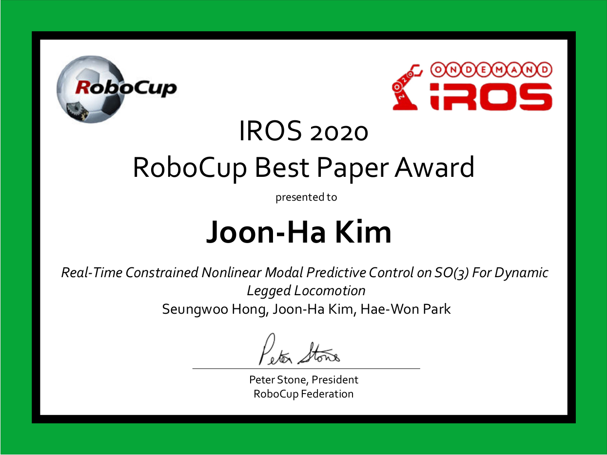

IROS Best RoboCup Paper Award

@INPROCEEDINGS{NMPCSO3Hong2020,
author={Hong, Seungwoo and Kim, Joon-Ha and Park, Hae-Won},
booktitle={2020 IEEE/RSJ International Conference on Intelligent Robots and Systems (IROS)},
title={Real-Time Constrained Nonlinear Model Predictive Control on SO(3) for Dynamic Legged Locomotion},
year={2020},
volume={},
number={},
pages={3982-3989},
doi={10.1109/IROS45743.2020.9341447}
}